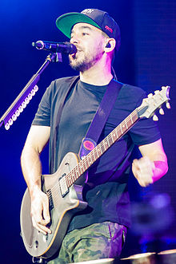

Chester Bennington
Chester Charles Bennington (March 20, 1976 – July 20, 2017) was an American singer, songwriter, musician, and actor.
The best brand
Linkin Park is an American rock band from Agoura Hills, California. The band's current lineup comprises vocalist/keyboardist/rhythm guitarist Mike Shinoda, lead guitarist Brad Delson, bassist Dave Farrell, DJ/keyboardist Joe Hahn, and drummer Rob Bourdon, all of whom are founding members. Vocalists Mark Wakefield and Chester Bennington and bassist Kyle Christner are former members of the band.
Chester Bennington
Chester Charles Bennington (March 20, 1976 – July 20, 2017) was an American singer, songwriter, musician, and actor.
Mike Shinoda
Michael Kenji Shinoda (/ʃɪˈnoʊdə/, born February 11, 1977) is an American musician, singer, songwriter, rapper, record producer, and graphic designer.
Rob Bourdon
Robert Gregory Bourdon (born January 20, 1979) is an American musician, best known as the drummer and founding member of the American rock band Linkin Park.